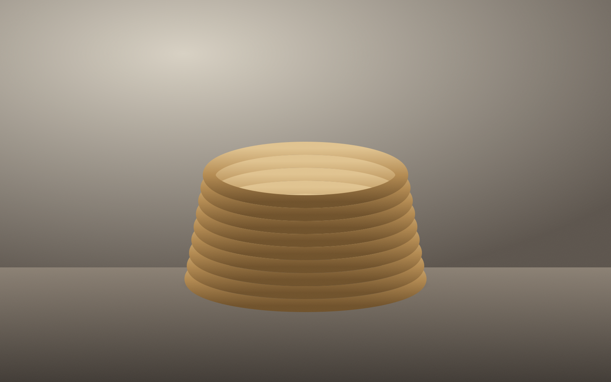

01 — Ropewalk, est. 1891
Rope, laid
by hand.
Scroll — the coil leadsHemp · Manila · Flax
02 — The walk
Two hundred and twenty metres, under one roof.
Every rope starts at the far end of a shed 220 metres long. The yarns are hooked to the jack and walked back by hand, three strands at a time.
It takes 40 minutes to walk a full length. Nobody has found a faster way that makes a better rope.
03 — The lay
Twist until it holds itself.
Sample data: turns per metre as one length is closed. A real build plots the ropemaker's own log.
04 — The coil
Coiled, tagged, sent on Thursday.
Each coil is wound against the lay, tagged with the walk it came from and the date, and leaves the yard on Thursday.
05 — The range
Four ropes.
No others.
Open any to see the lay
06 — Visit the walk
Come and
walk a length.
Invented brand · sample figures · a Fastidious composition test